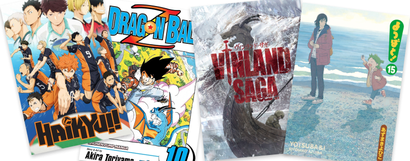
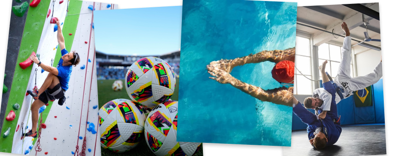
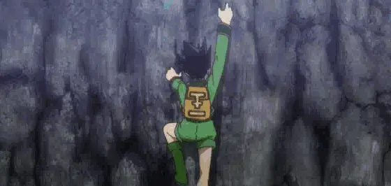
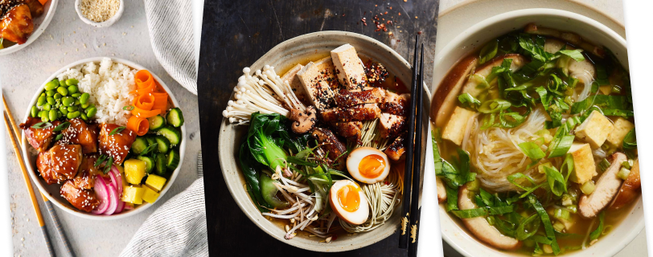
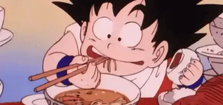
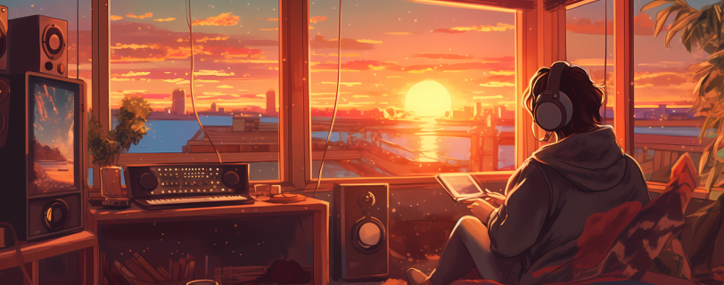

Over mij
In het kort
Ontdekking en groei zijn constante factoren in mijn leven. Met een diverse skill set en ervaring in verschillende media, ben ik uitgerust om diverse projecten aan te pakken. Of ik nu achter de camera werk, muziek maak op mijn gitaar, ontwerp in Figma of code schrijf, ik streef ernaar om een unieke creativiteit te brengen die moeilijk te evenaren is.
Naast mijn werk houd ik van reizen, boeken lezen en buitenactiviteiten zoals fietsen. Ik heb een analytische mindset en een passie voor leren. Als je meer over mij wilt weten, neem dan gerust contact op!
Daag jezelf uit en ontdek hoeveel je over mij weet. Klik hier! ッ
Educatie
Front-end Developer, Leiden Educational Institutions
2024 - Heden
Communicatie en Multimedia Design, Hogeschool Rotterdam
2020 — 2024
(Graduated — BSc)
Graphic Design, Willem de Kooning Academie
2019 — 2020
Welke manga is mijn all-time favourite?
Haikyu!!
Hirayasumi
Vinland Saga
Yotsuba&!
Correct! Heb je de kans gehad om het te lezen?
Zal je eens... Nee wacht, moet je doen!
Oeps, goede gok, maar dat klopt niet!
Ik hou van het verhaal van Vinland Saga
Welke sport vind ik het leukst?
Klimmen
Voetbal
Zwemmen
Jiu-jitsu
Je hebt de top bereikt
Goed gedaan!
Je bent gevallen... Ouch!
Het is klimmen
Wat is volgens jou mijn favoriete maaltijd?
Poke
Ramen noodles
Miso soup
Allemaal
Ding ding!
Ik kan gewoon geen favoriet kiezen
Ik kan gewoon geen favoriet kiezen...
Ik moet ze allemaal eten!
Naar welke muziekstijl luister ik het vaakst?
Lofi
Rock
K-Pop
Deep House